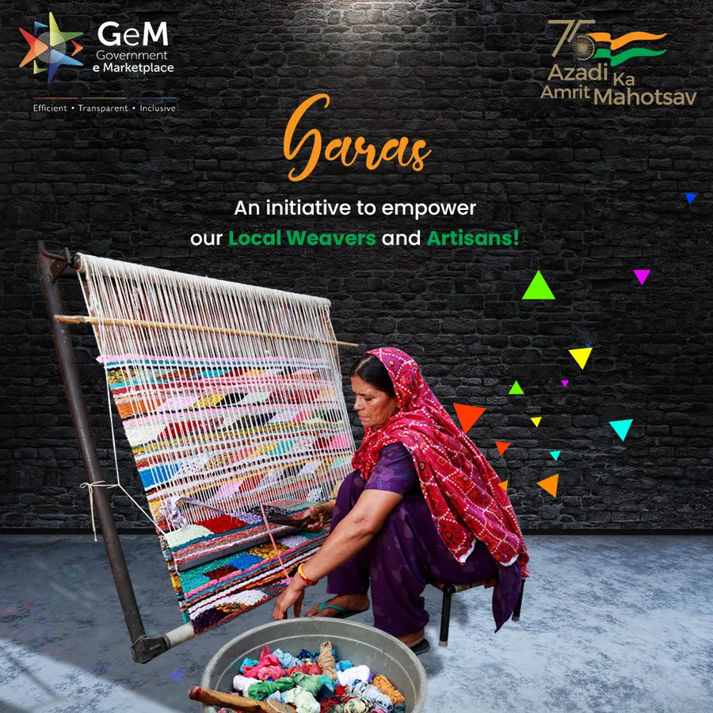
Digitalabs · Agency Client Work
GeM
Government e-Marketplace — social and campaign communication contributed to during my Digitalabs tenure. See Digitalabs ↓
Portfolio
Senior Visual & Brand Designer
10+ years of experience across brand identity, campaigns, digital, motion and creative direction — now exploring AI and physical product experiences through independent R&D.
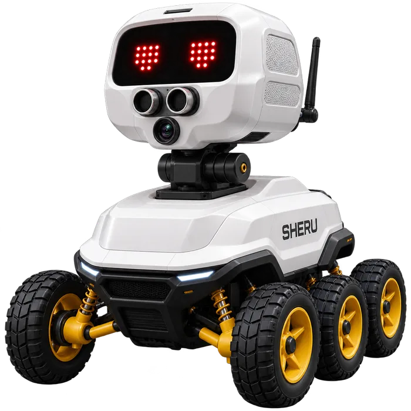
Featured Project · Independent R&D · In Development
Smart. Heuristic. Embedded. Robotic. Unit.
Sheru is an experimental offline-first family companion robot exploring how AI can become more natural, approachable and physically present in everyday family life.
Explore SHERU
Selected Work
THIP, Digitalabs, afaqs! and independent freelance work each get their own space below — this is a quick read of the range across them.

Digitalabs · Agency Client Work
Government e-Marketplace — social and campaign communication contributed to during my Digitalabs tenure. See Digitalabs ↓
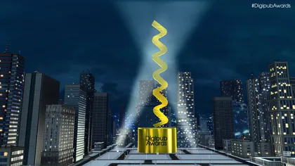
afaqs! · Creative Designer 2015–2020
Visual communication and motion-led content for four flagship media & industry events. See afaqs! ↓
Freelance · Brand Identity
Identity, packaging presentation and brand visual direction for a silver jewellery brand. See Freelance ↓
Current Role
Design Head · May 2024 — Present · Leading a 2-person creative team
Lead the creative function across brand, digital, social, editorial and video communication while maintaining visual consistency and guiding a 2-person creative team. Exploring AI-enabled personalization and recommendation experiences for THIP's evolving health platform.
Internal concept / exploration.
Agency Experience
Manager — Graphic Design · 2020 — 2024 · 4-person design team
Digitalabs was an agency environment spanning multiple clients and new-business pitches. I led creative direction and visual systems across client work while managing a 4-person design team. Selected work below represents contributions to these client accounts, not sole ownership of entire marketing functions.
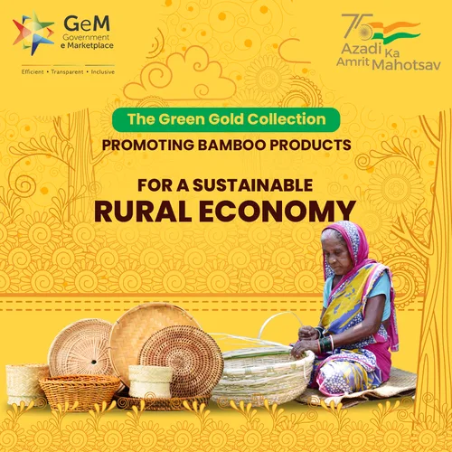
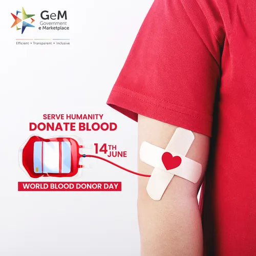
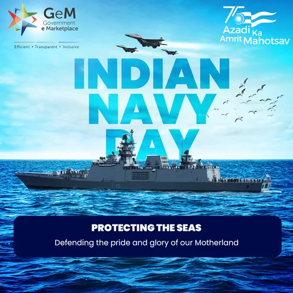
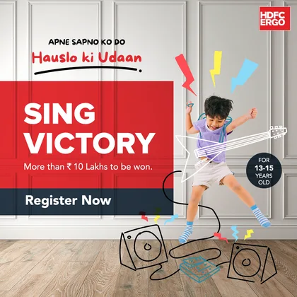
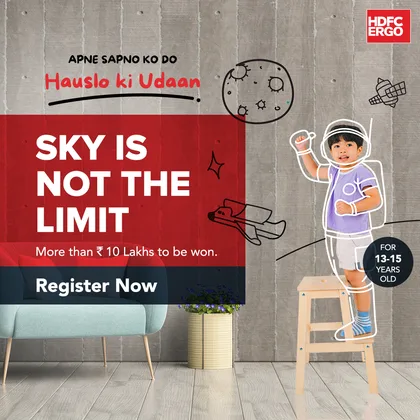
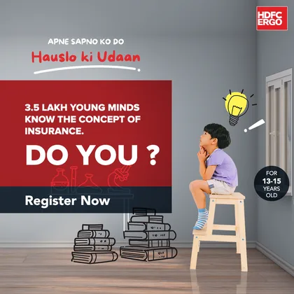
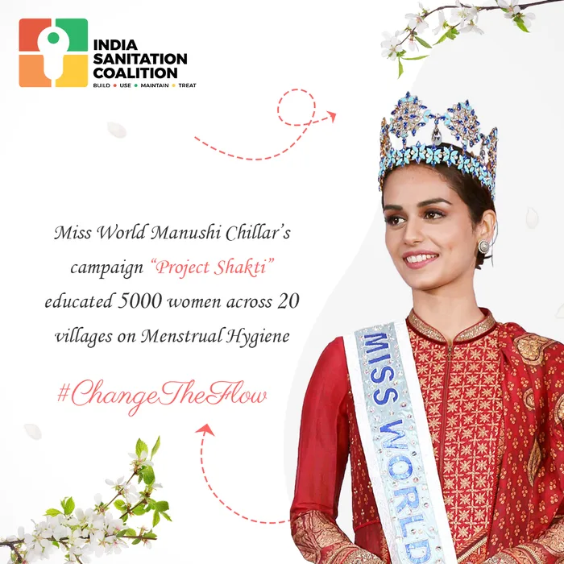
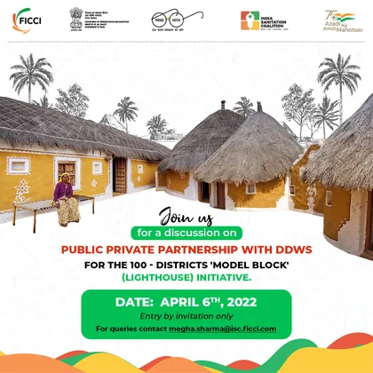
A campaign concept developed as part of a new-business pitch at Digitalabs — two directions explored for the same brand launch.
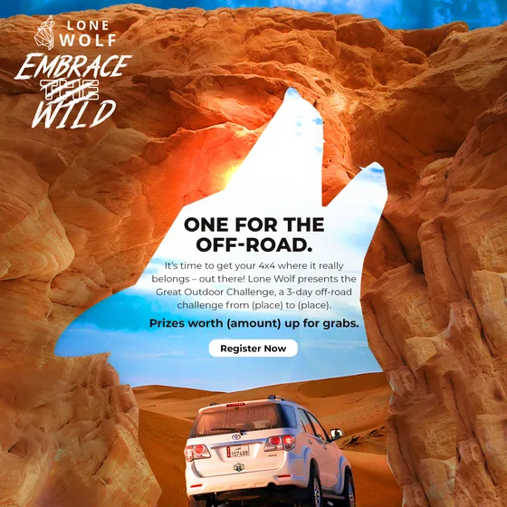
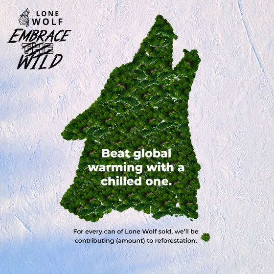
Maate is a baby and personal-care brand. Designed brand campaign film, social product content and motion-led communication across the line.
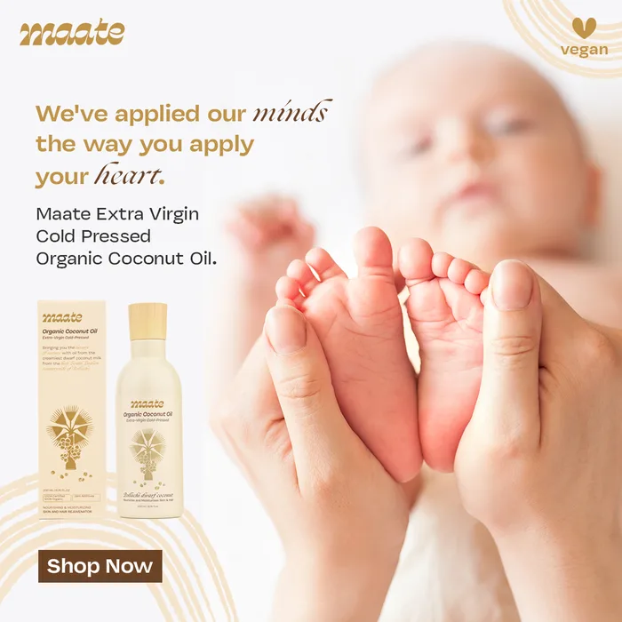
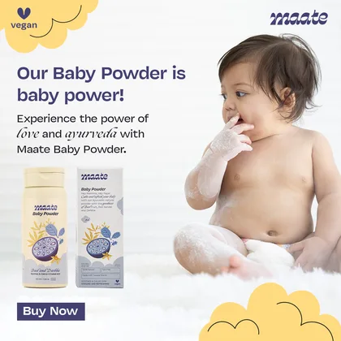
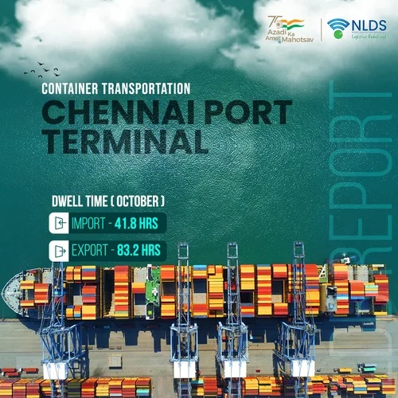
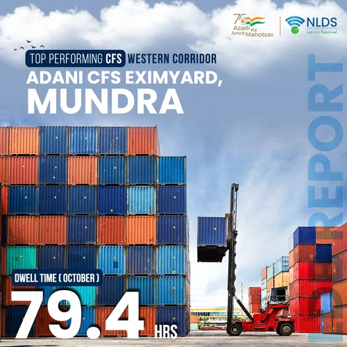
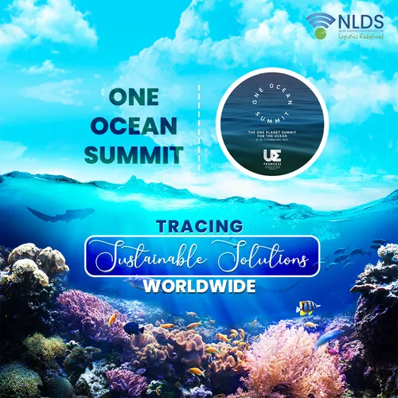
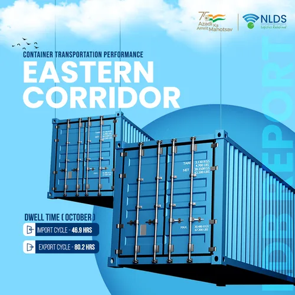
Professional Experience
Creative Designer · afaqs! · 2015 — 2020
Designed visual narratives and motion-led content across four flagship industry properties — event visual communication, promotional films, award-night motion graphics, partner/speaker credit sequences and highlight reels.
India's Buzziest Brands recognises the country's most talked-about brands of the year. Designed the awards invitation and the 3D honeycomb title sequence that opened the award-night presentation.
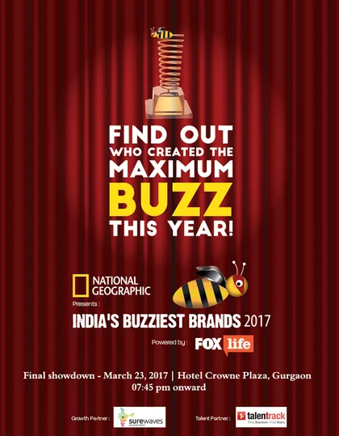
Digipub Awards is afaqs!'s awards program for India's digital publishing industry. This fully 3D-animated film — a city flythrough that resolves into a trophy reveal — opened the award-night presentation.
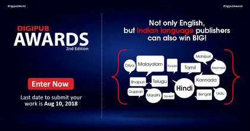
The Foxglove Awards celebrate craft and innovation in Indian advertising. Designed the low-poly 3D explainer film and the matching call-for-entries identity.
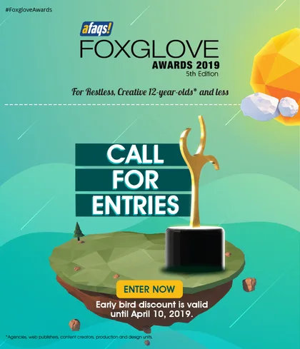
vdonxt Asia is afaqs!'s broadcast and streaming industry awards property, presented with Adobe. Designed the visual communication and motion content for this broadcast promo.
Freelance / Independent
Logo presentation, packaging mockups and visual direction for a silver jewellery brand.
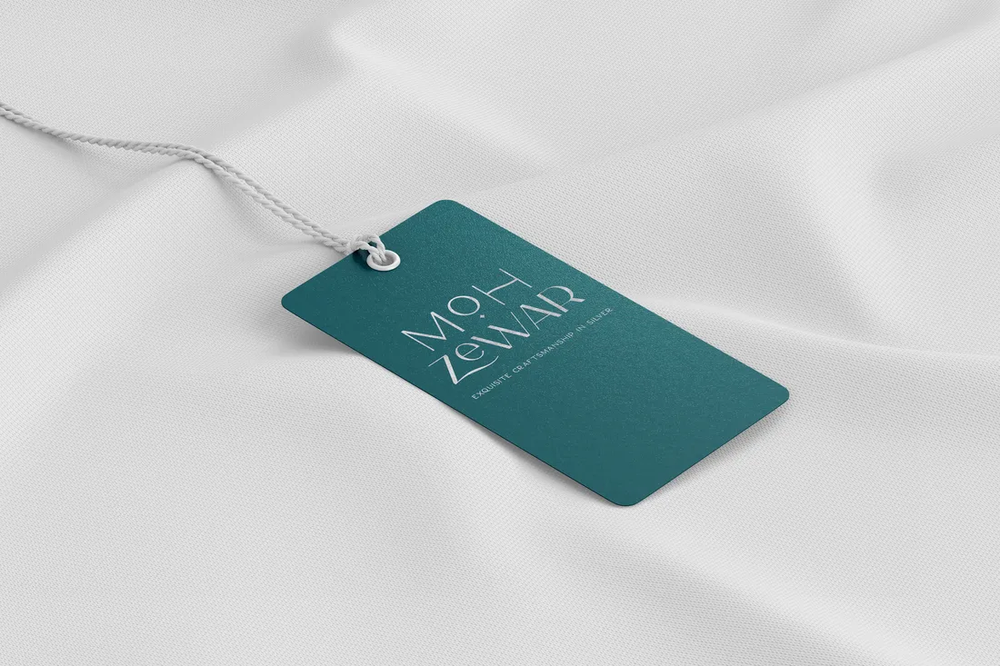
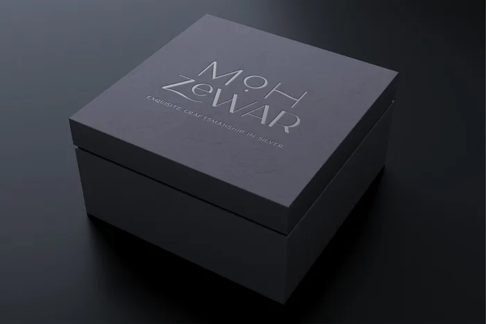
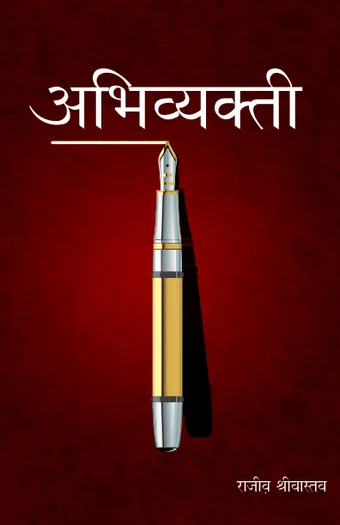
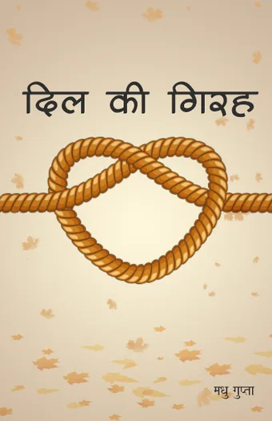
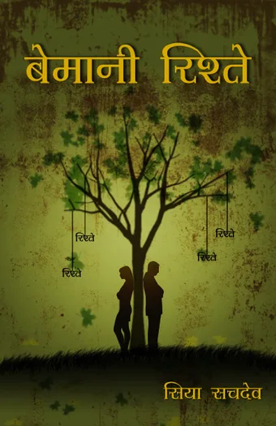
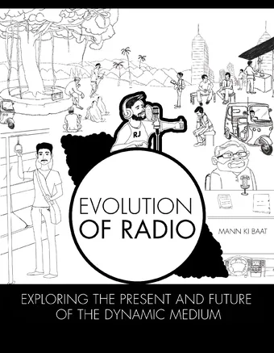
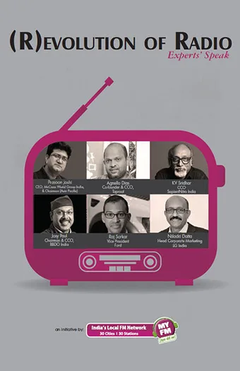
Metal is a Web3 social rewards app. Designed onboarding, leaderboard and poll-interaction screens.
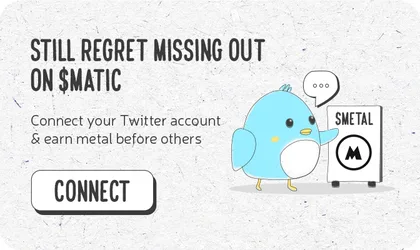
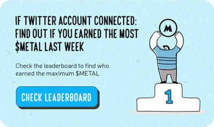
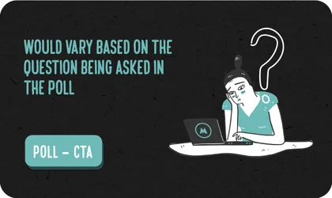
I'm a multidisciplinary visual and brand designer with 10+ years of experience across branding, digital, campaigns, motion and creative direction.
My career has taken me from hands-on visual design to leading creative teams and working across brands, digital platforms, social campaigns and multidisciplinary projects.
Alongside client work, I increasingly explore how design can shape emerging technologies. My current independent R&D project, Sheru, is an offline-first AI family companion robot exploring the intersection of AI, robotics, interaction and human-centered design.
I enjoy working where visual thinking meets technology, storytelling and real-world experiences.
Led creative execution across multiple brands while balancing team leadership, client requirements and new-business pitches.
SHERU is the main current experiment, supported by lightweight explorations across AI-assisted visual exploration, creative technology, interaction experiments, robotics, motion experiments and visual systems.
Read the SHERU case studyAvailable for senior design, creative leadership, brand, AI/product and international remote opportunities.